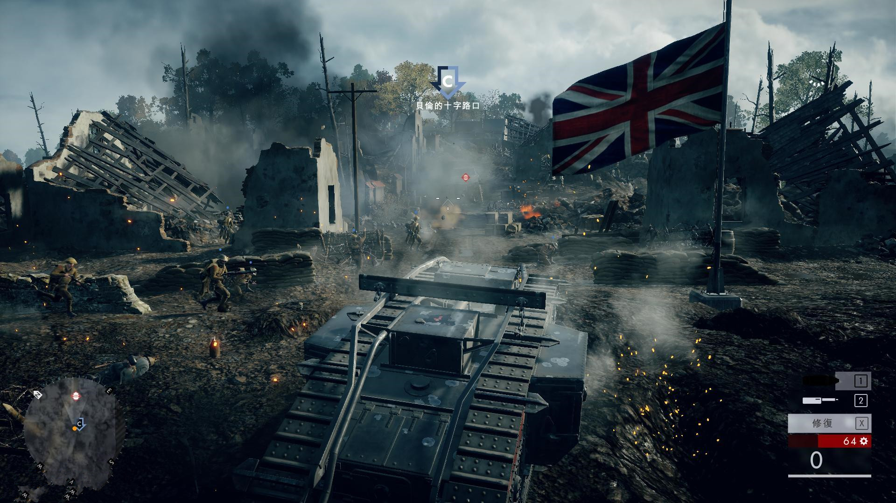

《战地1》（Battlefield 1）是2016年5月7日，EA官方正式公布的《战地》系列新作。 《战地1》是Julien Wera以一战为制作背景打造的一款射击类的游戏，游戏的主角就是当时参加一战的英德美意外加奥匈帝国和奥斯曼帝国等等，属于可以多人参加战斗的游戏，EA在E3 2016发布会上开放了《战地1》Demo现场多人模式试玩。 2016年12月15日，谷歌公布2016全球热搜游戏TOP10，《战地1》排名第4。
2016年5月7日，EA官方正式公布《战地》系列新作——《战地1》（Battlefield 1），故事设定在第一次世界大战。除了多人游戏外，EA还为喜欢单机游戏的玩家们准备了质量颇高的单人战役。
协约国在空中兵败如山倒。英军努力试着抗衡德军王牌飞行员，而当时战斗机飞行员的平均寿命是17天。你必须在胜算如此渺小的情况下在西线战场的空中展开顶尖对决。激烈的空战、峰回路转的剧情，以及一段关于友谊的故事等着你。
在中东的沙漠之中，阿拉伯部落正起义反抗鄂图曼帝国的压迫。帝国摧枯拉朽的火炮即将对上在马背上拿着步枪的反抗军势力。身为在传奇人物阿拉伯的劳伦斯身边的贝都因战士，你必须想办法战胜拥有优势技术的敌人，并摧毁致命的装甲列车。
1918 年秋季，英军准备在法国康布雷发动大型攻势。有了坦克的支援，协约国高层相信突破防线只是时间的问题。但 Mark V 坦克有个极大缺陷：它并不可靠。加入一群沟通失和的坦克乘员，在敌军战线后方杀出一条血路，并学习如何与团队合作。
意大利与奥匈帝国的军队在阿尔卑斯山上陷入对峙。在白雪皑皑的山巅之上，任何一方都无法驱逐对手。与此同时，意大利高山军团正准备发起不寻常规的突袭攻势。穿戴你的敢死队盔甲，深入崇山峻岭，加入双方在一座战略堡垒旁的冲突。
大英帝国打算针对鄂图曼本土发起一场前所未见的海军攻势，藉此开启全新的战线。在加里波利大登陆中 — 也就是一次大战中的 D-Day — 载运着超过 50 万兵员的船舰缓缓集结。身为澳纽联军的传令兵，你将见证史诗般的炮火轰炸，以及抢滩登陆，还必须在前线负责传递攸关生死的机密讯息。